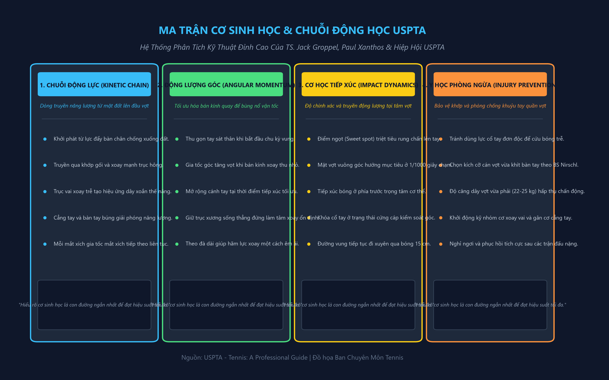
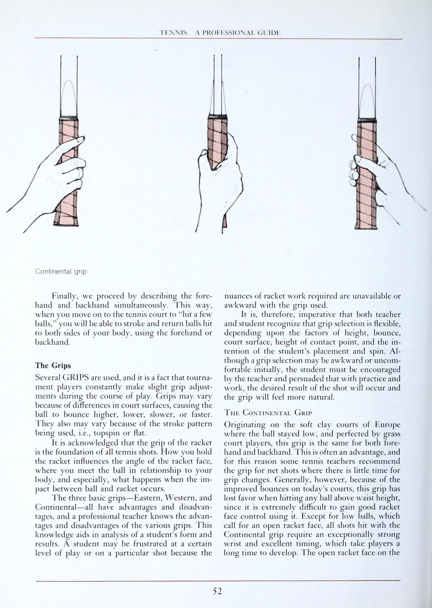
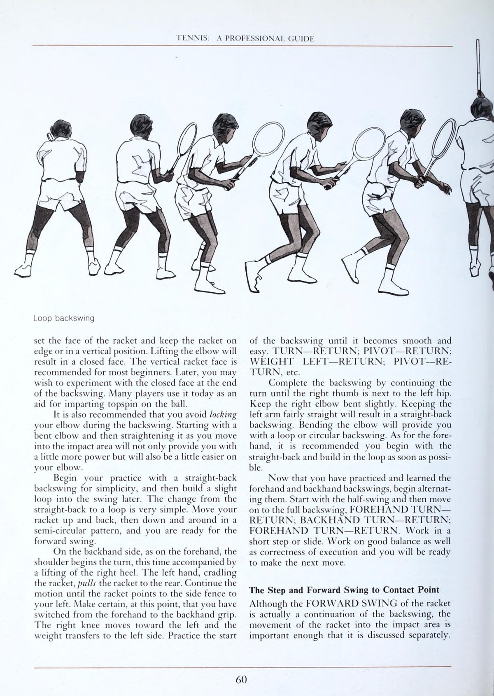
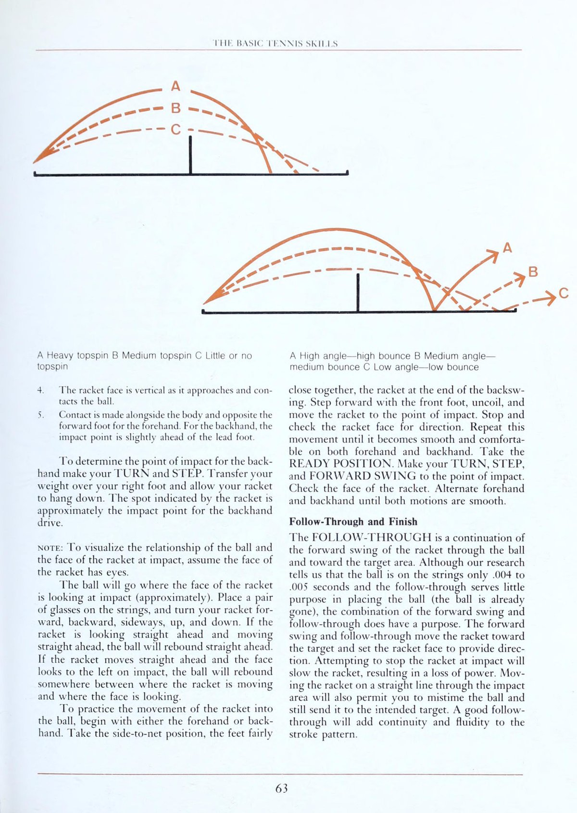
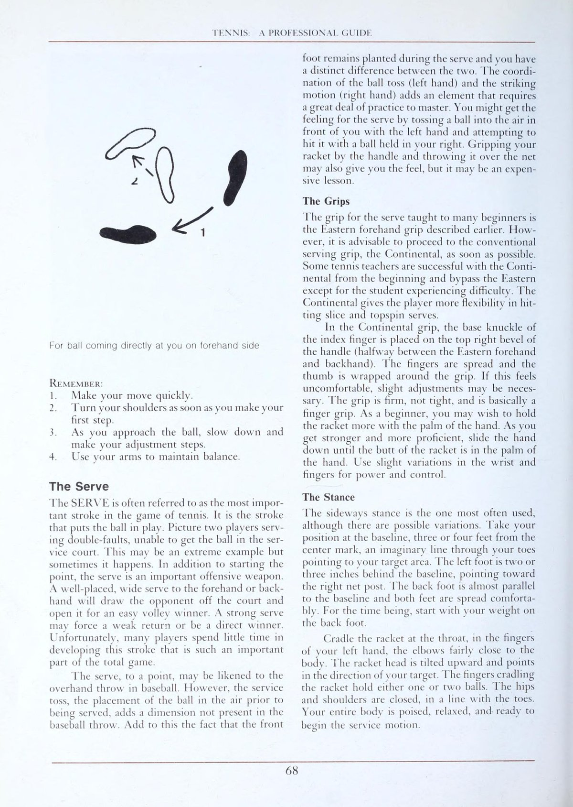
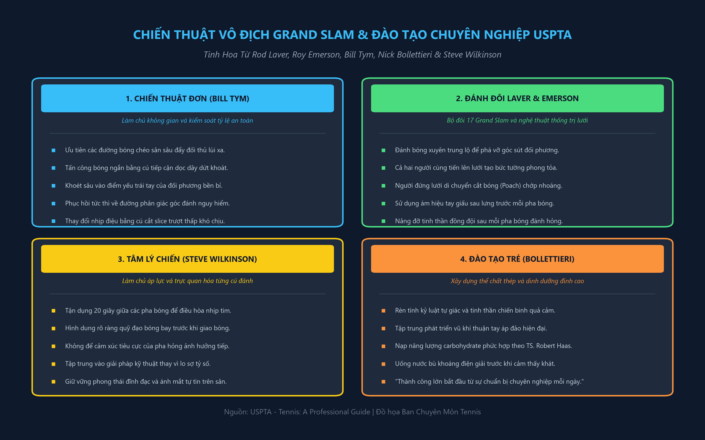
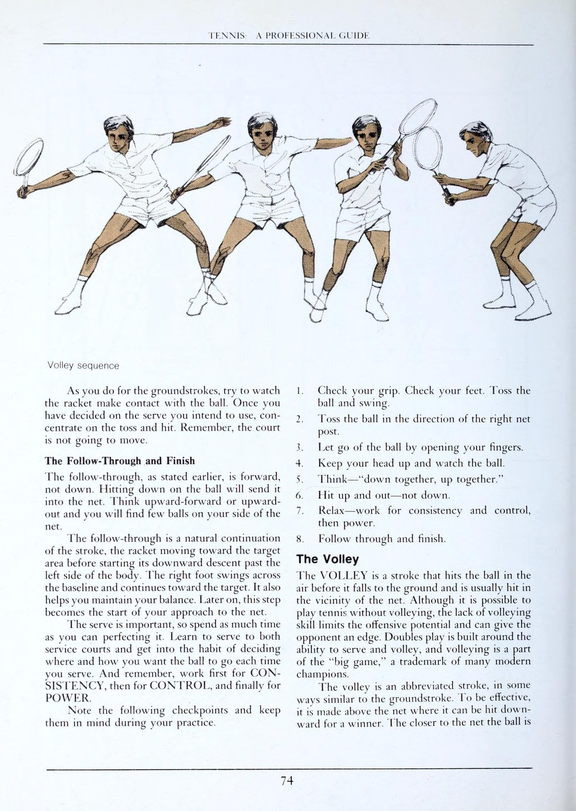
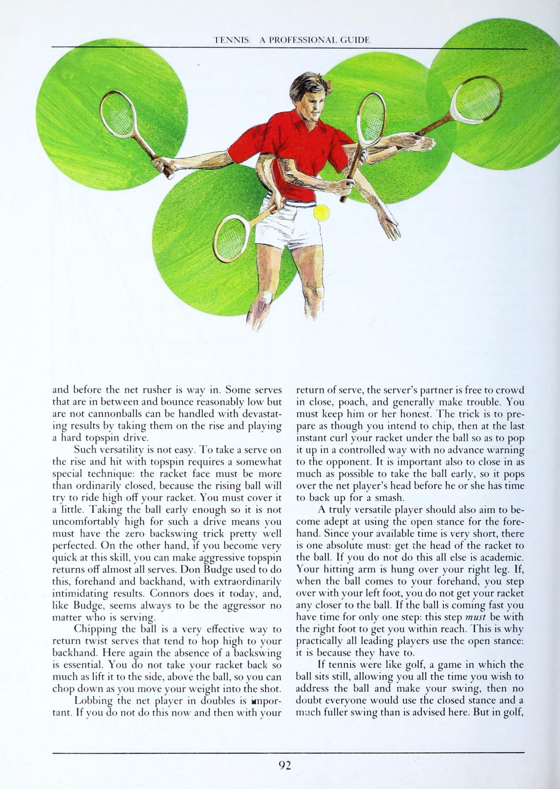

Lịch Sử Quần Vợt Chuyên Nghiệp, Kỹ Thuật Nền Tảng & Cơ Sinh Học Đỉnh Cao
Lịch Sử Quần Vợt Chuyên Nghiệp & Di Sản USPTA
Lịch sử quần vợt chuyên nghiệp là một hành trình tiến hóa vĩ đại từ những trận đấu giao hữu quý tộc trên mặt cỏ thế kỷ XIX đến một nền công nghiệp thể thao toàn cầu trị giá hàng tỷ đô la. Trong suốt quá trình phát triển đó, USPTA luôn đóng vai trò là ngọn hải đăng định hướng các tiêu chuẩn giảng dạy chuyên nghiệp, bảo đảm rằng mỗi bài học được truyền đạt trên sân đấu đều dựa trên những nguyên lý khoa học chính xác và an toàn nhất cho người chơi.
Từ thời kỳ của Bill Tilden, Don Budge cho đến kỷ nguyên mở của Rod Laver, Arthur Ashe và John McEnroe, kỹ thuật quần vợt đã chứng kiến sự chuyển dịch kỳ diệu từ lối đánh bóng phẳng cổ điển sang thời kỳ thống trị của tốc độ, độ xoáy cuộn topspin nặng và sự bùng nổ của chuỗi động lực toàn thân.
Cơ Sinh Học Ứng Dụng Trong Quần Vợt Của TS. Jack L. Groppel
Cơ sinh học (Biomechanics) là môn khoa học nghiên cứu các lực tác động lên cơ thể con người và những chuyển động mà các lực đó tạo ra. Trong môn quần vợt, việc nắm vững các nguyên lý cơ sinh học là chìa khóa để tối đa hóa uy lực của cú đánh mà không làm gia tăng nguy cơ chấn thương.

1. Chuỗi Động Lực (The Kinetic Chain)
Một cú đánh mạnh mẽ không bao giờ được tạo ra đơn độc bởi cơ bắp cánh tay. Nó là kết quả của một chuỗi động lực liên hoàn bắt đầu từ mặt đất:
- Phản lực mặt đất (Ground Reaction Force): Bàn chân đạp mạnh xuống sân để nhận lại lực phản hồi tương đương từ mặt đất theo Định luật III Newton.
- Chuyển giao qua khớp gối và xoay hông: Lực đẩy từ chân làm duỗi khớp gối và kích hoạt chuyển động xoay bùng nổ của khung chậu.
- Xoay trục vai và độ trễ thân trên: Trục vai xoay sau trục hông, tạo ra hiệu ứng dây xoắn thế năng ở các nhóm cơ lõi vùng bụng và lưng.
- Giải phóng cẳng tay và bàn tay: Năng lượng tích lũy được phóng thích liên tục qua cánh tay trên, khớp khuỷu, cẳng tay và cuối cùng là bàn tay.
- Gia tốc đầu vợt (Racquet Head Acceleration): Đầu vợt là mắt xích cuối cùng, tiếp nhận toàn bộ năng lượng cộng dồn để va đập vào quả bóng với vận tốc tối đa.
2. Định Luật Bảo Toàn Mô-Men Động Lượng (Angular Momentum)
Khi cơ thể xoay quanh trục xương sống thẳng đứng, vận tốc góc sẽ tỷ lệ nghịch với bán kính quay. Bằng cách gập nhẹ khuỷu tay và giữ cây vợt gần thân người hơn trong giai đoạn khởi đầu vung vợt, tay vợt có thể xoay thân trên nhanh hơn đáng kể. Khi tiếp cận điểm tiếp xúc bóng, cánh tay được vươn dài ra phía trước để tối đa hóa đòn bẩy và truyền trọn vẹn mô-men động lượng vào quả bóng.
Kỹ Thuật Căn Bản Của Paul J. Xanthos & Ian Crookenden
Paul Xanthos — một trong những bậc thầy huấn luyện vĩ đại nhất của USPTA — đã hệ thống hóa các cú đánh căn bản thành các nguyên tắc động học không thể thay đổi:
Cú Thuận Tay Chuẩn Mực USPTA
Xoay vai sớm ngay khi nhận diện đường bóng, hạ đầu vợt thấp hơn tầm bóng nảy từ 20 đến 30 cm để tạo quỹ đạo vung từ dưới lên trên.
Cú Trái Tay Vững Như Bàn Thạch
Đối với cú một tay, lưng gần như quay một phần về phía lưới, ngón tay cái áp chéo sau cán vợt làm trụ đỡ vững chắc.


Cú Đánh Chuyên Biệt, Hệ Thống Đánh Giá Năng Lực & Giáo Án Tập Luyện Chuẩn Mực
Kho Vũ Khí Chuyên Biệt Của USPTA
Để trở thành một tay vợt nguy hiểm trên mọi mặt trận, bạn phải thành thạo bốn cú đánh chiến thuật đặc trưng:
Cú Đánh Tiếp Cận (Approach Shot)
Là chiếc cầu nối đưa bạn từ cuối sân lao lên chiếm lĩnh vị trí trên lưới khi đối phương trả về bóng ngắn ở giữa sân.
Nghệ Thuật Lốp Bóng Đa Tầng (The Lob)
Cú lốp bóng không chỉ là giải pháp phòng ngự thụ động mà còn là đòn phản công sắc lẹm.
Cú Bỏ Nhỏ Ngụy Trang (Drop Shot)
Một cú chạm bóng tinh tế triệt tiêu toàn bộ lực nảy khi đối phương bị đẩy lùi xa ngoài đường biên.
Cú Demi-Volley / Bắt Nửa Nảy
Cứu nguy hoàn hảo khi quả bóng bay cắm vào ngay sát mũi chân của bạn trong lúc đang lao lên lưới.
Đánh Giá Năng Lực & Lập Kế Hoạch Tập Luyện Của Clarence Mabry
Một vận động viên không thể tiến bộ nếu không biết chính xác điểm mạnh và điểm yếu của bản thân. Hệ thống đánh giá tiêu chuẩn của USPTA phân loại người chơi dựa trên tính ổn định, độ sâu của đường bóng, tốc độ di chuyển và khả năng chịu áp lực tâm lý.
- 15 phút đầu: Khởi động làm nóng cơ bắp, chạy biến tốc ngắn và đánh bóng cự ly ngắn (mini-tennis) rèn cảm giác bóng.
- 30 phút tiếp theo: Tập luyện kỹ thuật chuyên biệt có mục tiêu (đánh 50 bóng chéo sân sâu, 30 bóng tiếp cận lưới dọc dây).
- 25 phút kế tiếp: Các bài tập thi đấu mô phỏng tình huống thực tế (đấu tie-break từ tỷ số 4-4, thi đấu game với quy định phải giao bóng lên lưới).
- 20 phút cuối: Thả lỏng tích cực, kéo giãn các nhóm cơ chính và ghi chép nhật ký huấn luyện rút kinh nghiệm.


Chiến Thuật Đơn Thông Minh Của Bill Tym & Nghệ Thuật Đánh Đôi Đỉnh Cao Rod Laver - Roy Emerson
Chiến Thuật Thi Đấu Đơn Hiện Đại Của Bill Tym
Bill Tym — Chủ tịch danh dự của USPTA — đã đúc kết chiến thuật thi đấu đơn vào bốn trụ cột hình học bất biến:

1. Định Luật Tỷ Lệ Phần Trăm An Toàn (Percentage Tennis)
Trong phần lớn các trận đấu chuyên nghiệp và bán chuyên, bảy mươi phần trăm số điểm kết thúc do lỗi tự đánh hỏng. Tay vợt khôn ngoan luôn ưu tiên những đường bóng chéo sân sâu (cross-court drives) vì khoảng cách đường chéo dài hơn đường thẳng gần hai mét và quả bóng bay qua phần mép lưới võng xuống thấp nhất (0,91 mét).
2. Khai Thác Điểm Yếu Trái Tay & Tấn Công Bóng Ngắn
Hầu hết các đối thủ đều có cú trái tay kém ổn định hơn cú thuận tay khi bị ép đánh bóng nảy cao ngang vai. Hãy kiên trì dồn ép bóng sâu vào góc trái tay của đối phương cho đến khi họ trả về một quả bóng ngắn nảy lơ lửng giữa sân. Ngay tại khoảnh khắc đó, hãy lập tức bước chân vào sân, thực hiện cú tiếp cận dọc dây (down the line) và tràn lên lưới kết liễu pha bóng.
Nghệ Thuật Đánh Đôi Thống Trị Lưới Của Rod Laver & Roy Emerson
Với bề dày thành tích thâu tóm vô số danh hiệu Grand Slam, Rod Laver và Roy Emerson đã xây dựng nên cẩm nang đánh đôi chuẩn mực cho toàn thế giới:
Chiến Thuật Đánh Xuyên Trung Lộ
Luôn ưu tiên đánh quả bóng vào khoảng trống chính giữa hai đối thủ bên kia lưới.
Bức Tường Phong Tỏa Mặt Lưới
Cặp đôi nào cùng tiến lên lưới thiết lập thế trận trước sẽ nắm giữ tám mươi phần trăm xác suất giành chiến thắng điểm số đó.
Chuẩn Bị Cho Trận Đấu Của Fred Stolle
Huyền thoại Fred Stolle nhấn mạnh rằng một trận đấu thực sự bắt đầu từ nhiều giờ trước khi bước ra sân: khảo sát hướng gió, tốc độ nảy của mặt sân, thói quen giao bóng của đối thủ và thực hiện quy trình khởi động tim mạch 20 phút để cơ thể đạt trạng thái hưng phấn tối đa ngay từ điểm số đầu tiên.


Huấn Luyện Tâm Lý, Dinh Dưỡng Đỉnh Cao, Y Học Phòng Ngừa & Đào Tạo Trẻ
Huấn Luyện Tâm Lý Đỉnh Cao Của Steve Wilkinson
Trong các trận đấu đỉnh cao, sự chênh lệch về trình độ kỹ thuật giữa các tay vợt là vô cùng nhỏ bé. Thứ phân định kẻ thắng người thua chính là khả năng làm chủ trạng thái tâm lý trong những thời khắc cân não:
Kỹ Thuật Ổn Định Nhịp Thở
Khi căng thẳng, nhịp thở thường trở nên nông và nhanh, khiến lượng oxy lên não giảm sút và cơ bắp bị co cứng.
Trực Quan Hóa (Mental Imagery)
Trước khi giao bóng, hãy nhắm mắt trong tích tắc và chiếu một "đoạn phim ngắn" trong tâm trí về hình ảnh quả bóng cắm chúi vào góc chữ T hoàn hảo.
Dinh Dưỡng Cho Hiệu Suất Tối Đa Của TS. Robert Haas
TS. Robert Haas — chuyên gia dinh dưỡng thể thao từng đồng hành cùng Martina Navratilova — đã thiết lập nên công thức dinh dưỡng tối ưu cho môn quần vợt:
- Nạp năng lượng Carbohydrate phức hợp: Bổ sung tinh bột hấp thụ chậm (yến mạch, mì ống nguyên cám, khoai lang) trước ngày thi đấu để dự trữ tối đa glycogen trong gan và cơ bắp.
- Bù nước và điện giải khoa học: Uống từng ngụm nước nhỏ chứa khoáng chất kali và natri sau mỗi lần đổi sân. Không bao giờ chờ đến khi cảm thấy khát mới uống nước.
- Hồi phục ngay sau trận đấu: Trong vòng 30 phút sau khi rời sân, hãy bổ sung tỷ lệ 4:1 giữa carbohydrate và protein nạc để phục hồi sợi cơ bị tổn thương.
Y Học Thể Thao & Phòng Chống Khuỷu Tay Quần Vợt (BS. Robert Nirschl)
Hội chứng khuỷu tay quần vợt (Tennis Elbow) là nỗi ám ảnh lớn nhất của người chơi. Bác sĩ Robert Nirschl khẳng định rằng nguyên nhân gốc rễ bắt nguồn từ kỹ thuật đánh bóng sai lầm và việc sử dụng trang thiết bị không tương thích:
Nguyên Nhân Cơ Học
Hiện tượng gập hoặc lật cổ tay đột ngột khi bóng chạm trễ ở cú trái tay một tay tạo ra lực giật cực mạnh lên nhóm gân duỗi cổ tay tại lồi cầu ngoài xương cánh tay.
Tương Thích Cán Vợt & Dây Căng
Cán vợt quá nhỏ sẽ buộc người chơi phải bóp chặt các ngón tay liên tục, gây căng cứng mãn tính cho cẳng tay.
Đào Tạo Trẻ & Tương Lai USPTA Của Nick Bollettieri
Nick Bollettieri kết luận rằng chìa khóa để biến một đứa trẻ tài năng thành một nhà vô địch thế giới không nằm ở những lời khen ngợi dễ dãi mà nằm ở việc xây dựng một môi trường rèn luyện kỷ luật thép, khát khao chiến đấu không lùi bước và tinh thần trách nhiệm với từng cú đánh của cuộc đời. Quần vợt là người thầy vĩ đại nhất dạy chúng ta cách đứng lên sau mỗi lần vấp ngã.